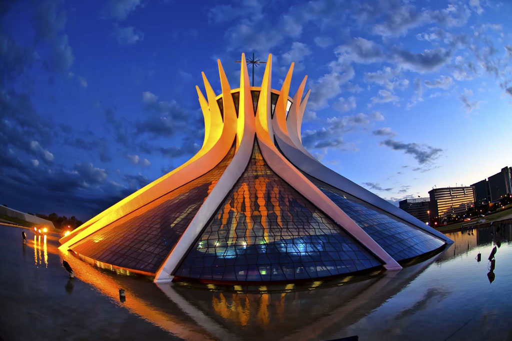
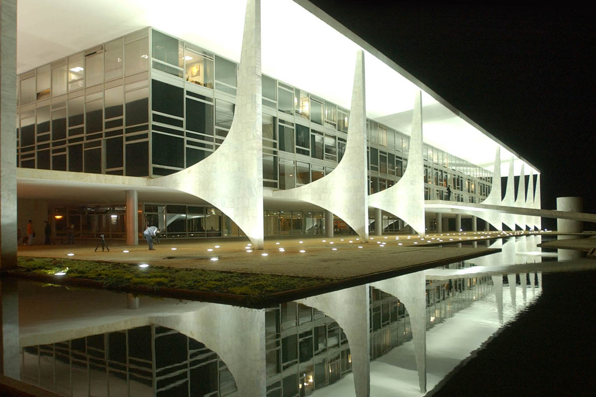
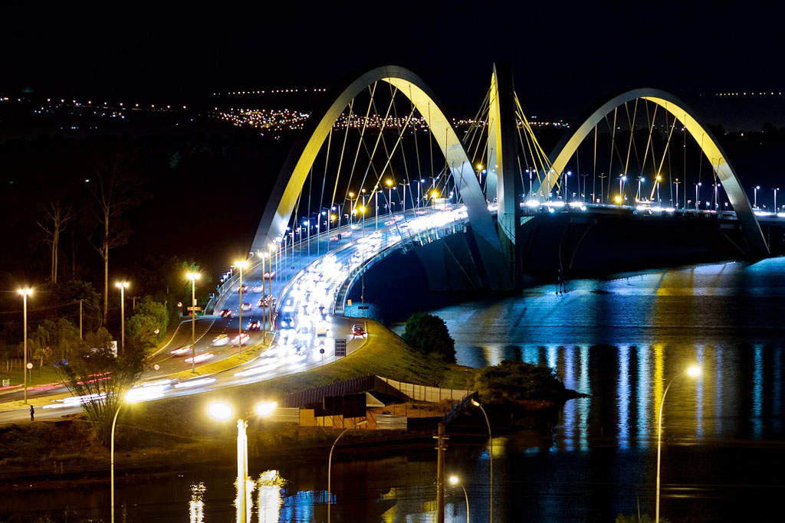

No dia 21 de abril de 1960, no governo do presidente Juscelino Kubitschek (JK) foi inaugurada Brasília. Com o Plano Urbano de Lucio Costa – o Plano Piloto – e tendo como chefe da divisão de arquitetura Oscar Niemeyer, a realização de Brasília botava em prática inovações no campo de planejamento urbano e arquitetura. O Rio de Janeiro, um grande e movimentado centro urbano, deixava de ser a sede do governo federal que foi deslocado para o Planalto Central no chamado “Retângulo Cruls” em referência ao engenheiro Luiz Cruls, responsável pela demarcação da área durante a Comissão Exploradora do Planalto Central (1892-1893) ainda no governo de Floriano Peixoto (1891-1894).
Conforme a data da expedição indica, o projeto de transferência da capital era bem anterior à inauguração. Quando Floriano Peixoto organiza esse mapeamento da região, tomava as primeiras medidas para cumprir a “meta mudancista” presente na constituição de 1891, a primeira do período republicano. A carta de 1946 mantém também como projeto a mudança de capital, mas essa ideia não era implementada pois não parecia sensato a transferência da capital da republica para o Centro-Oeste, uma região ainda desconhecida para grande parte dos brasileiros. Só no governo de JK esse projeto saiu do papel virando realidade.
JK tinha como slogam de campanha “50 anos em 5”, isto é, o Brasil atingiria em 5 anos, um crescimento correspondente ao período de 50 anos. Esse slogam sintetizava seu objetivo maior de acelerar o desenvolvimento nacional. A “linguagem do desenvolvimento” estaria expresso em seu Plano de Metas, um documento essencialmente econômico que tinha como alguns de seus objetivos a integração nacional através das construção de Brasília e estradas que ligassem as cidades próximas à mais recente capital. Propunha-se, assim, 2 resultados: Aceleração do desenvolvimento nacional ao promover a interiorização; Fomento à industrialização promovido pelo crescimento do mercado interno.
A construção de Brasília foi um projeto que só foi incorporado ao Plano de Metas durante a campanha presidencial, mas tornou-se rapidamente em prioridade de Juscelino que a situava com lugar de destaque. Seria a construção da nova capital a “grande meta de integração nacional”, a “meta síntese” da sua administração. Procurava-se romper com a velha concepção da “vocação essencialmente agrícola do Brasil”, ao por em prática um programa de desenvolvimento industrial de tipo capitalista. O governo de JK ficou conhecido como “anos dourados”, e o Plano de Metas como “revolução industrial brasileira” decorrente dos sucessos obtidos com o seu planeamento nacional-desenvolvimentista.
Alguns setores da esquerda denunciavam que a construção de Brasília era uma medida do governo para mudar o foco da opinião pública que debatia sobre reforma agrária. De fato o governo procurou evitar conflitos com a oligarquia latifundiária ao não promover a reforma agrária e nem uma legislação sobre as fronteiras agrícolas que estavam se abrindo com a construção de Brasília e o cruzeiro rodoviário.
Brasília tornou-se então um monumento controvertido da memória política brasileira, pois o símbolo da modernização e integração nacional trouxe como consequência um aumento da desigualdade regional e também favoreceu a formação de novos latifúndios, pois posseiros, camponeses, e índios representavam o lado mais fraco na luta pela terra no Brasil. E se antes, a população estava perto do centro de decisões políticas facilitando a manifestação das insatisfações, agora o poder tinha se deslocado para o interior do país.
  